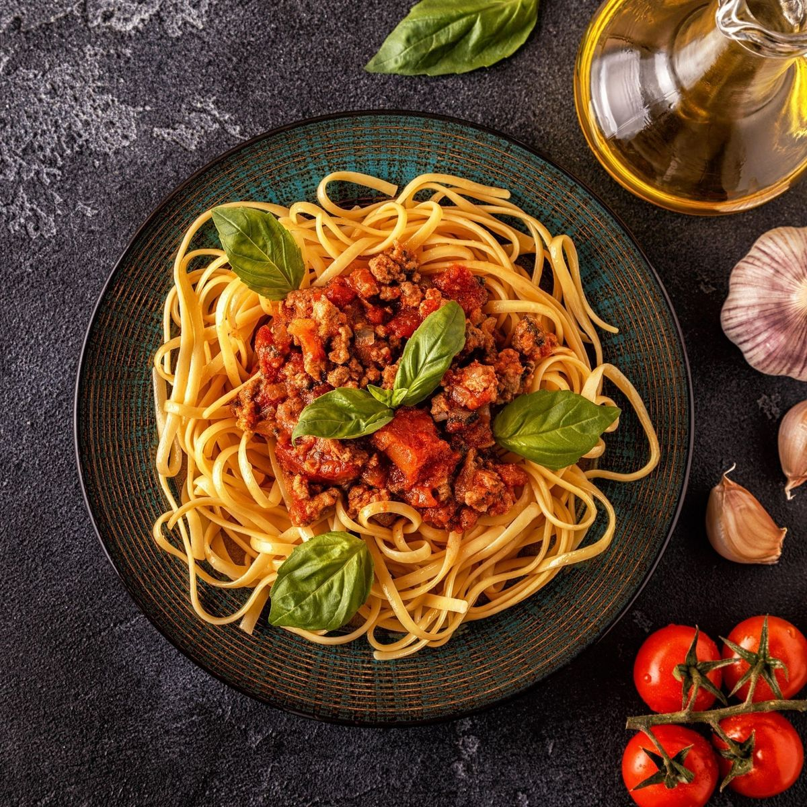
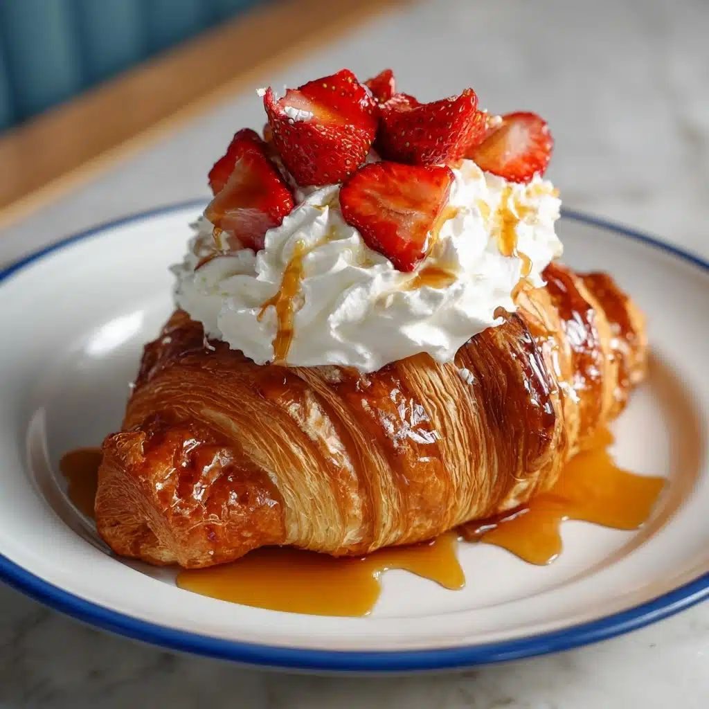
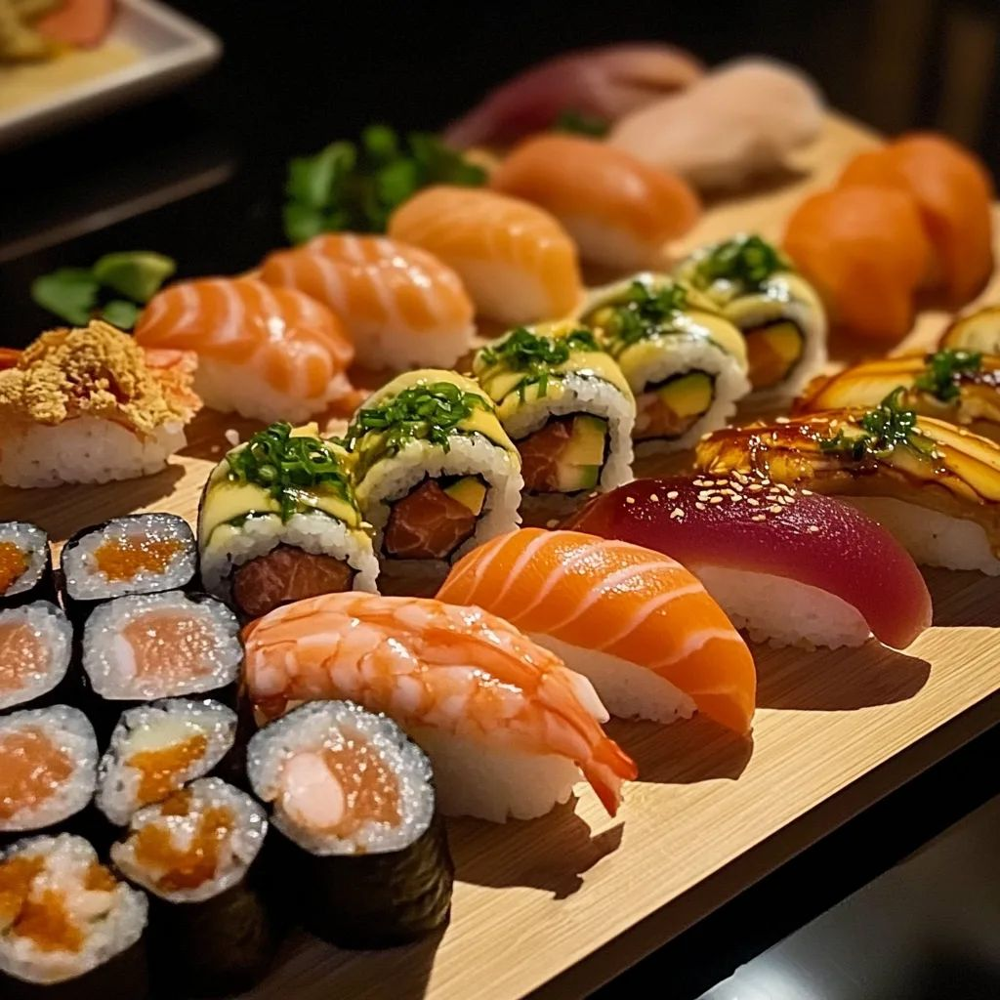
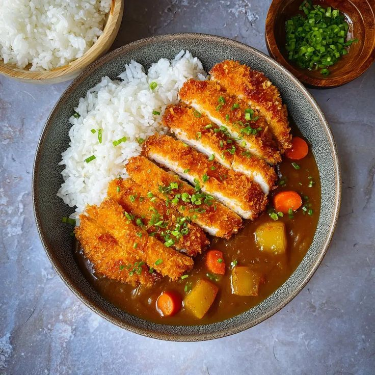
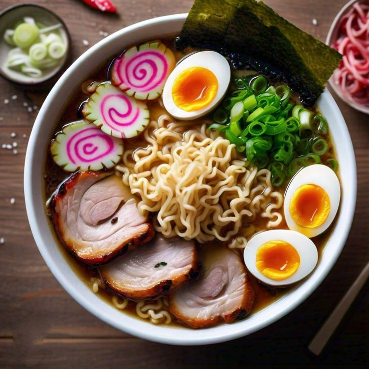

Світова кухня — це поєднання традицій, смаків та культур різних народів.
| Країна | Страва | Опис | Фото | Де скуштувати |
|---|---|---|---|---|
| Італія | Паста | Традиційна страва з тіста з різними соусами. |  |
Ресторани Риму |
| Франція | Круасан | Свіжа випічка з ніжного листкового тіста. |  |
Кафе Парижа |
| Країна | Страва | Опис | Фото | Де скуштувати |
|---|---|---|---|---|
| Японія | Суші | Рис з морепродуктами або рибою. |  |
Ресторани Токіо |
| Індія | Каррі | Пряна страва з соусом і спеціями. |  |
Ресторани Делі |
| Японія | Рамен | Суп з локшиною, м’ясом і бульйоном. |  |
Ресторани Токіо |